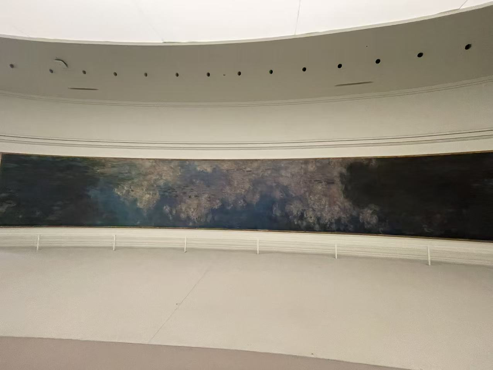
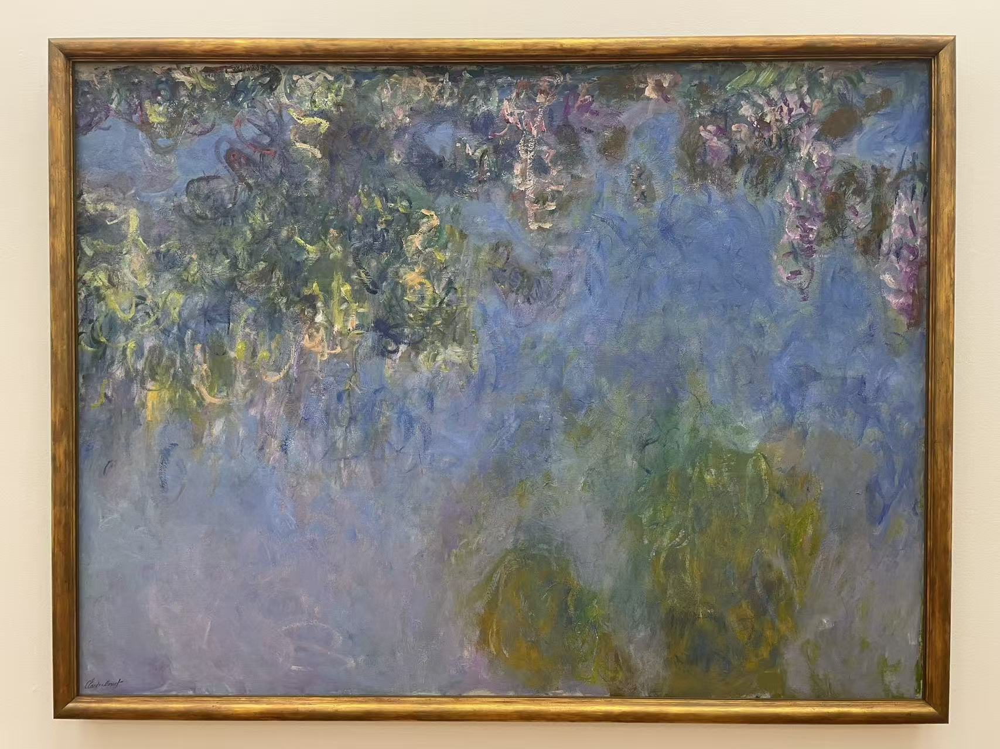

CLAUDE MONET / 池畔延伸：紫藤
紫藤
Wisteria / Blauweregen

- 作者
- 克洛德·莫奈
- 年代
- 1917—1920年
- 材料
- 布面油画
- 尺寸
- 150.5 × 200.5厘米
- 收藏／所在
- 海牙艺术博物馆
- 编号／位置
- 0333516
看画
紫藤从上方垂落，蓝紫色在花簇之间铺开。它画的是池边植物，不作为一幅睡莲计数。
作品札记与资料
这幅保留在旁边，是因为它与睡莲确实有关系。海牙馆方介绍，莫奈曾设想在大型《睡莲》上方再安排一圈紫藤画，形成装饰带；后来确定使用橘园既有建筑，紫藤部分没有纳入最终陈列。
回到照片看，花簇主要集中在上缘，下方留下大片蓝色。这样的布局与睡莲从水面向上望见倒影的感觉不同，也让人想象，若紫藤真的悬在睡莲上方，两种画面会怎样共同包围观众。后一层是观看分析，并非对橘园现状的描述。
基本信息据馆方资料与已有现场展签 · 2026年10月核对。